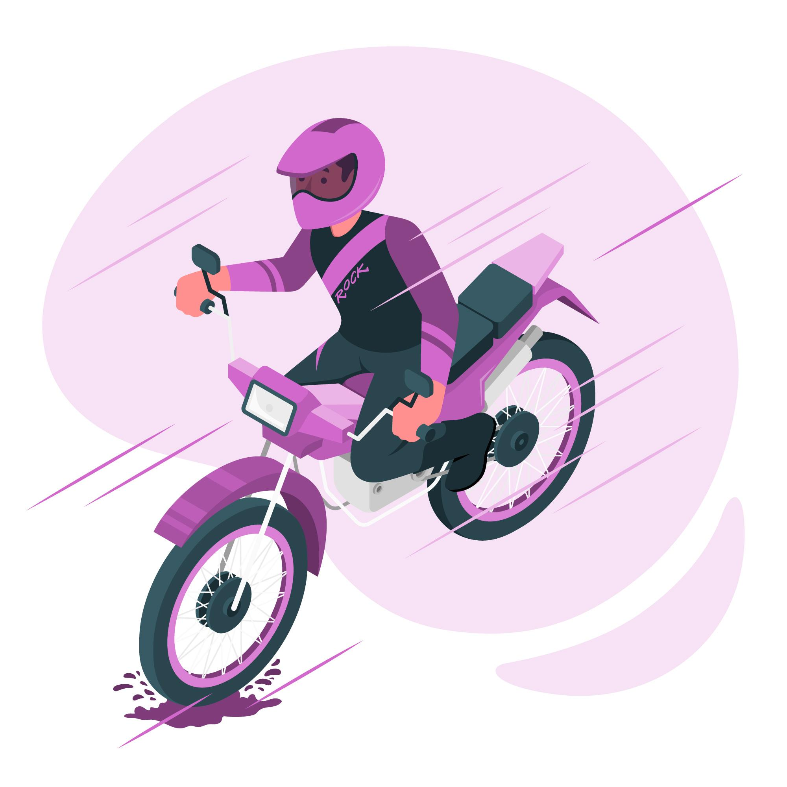

Qualidade Com alta qualidade em todos os detalhes, a CG Titan possui um ótimo valor de revenda. Não à toa, ela faz parte da linha mais vendida do país. Econômica Curta o melhor das estradas e cidade, gastando menos. Com motor FlexOne essa moto tem baixo consumo de combustível, além de ter baixo custo de manutenção. Visual Esportivo Inspirada em motos esportivas, a CG 160 Titan tem um visual moderno. Ideal para quem não abre mão de pilotar com estilo e personalidade. motor Tipo: OHC, Monocilíndrico 4 tempos, arrefecido a ar.
Cilindrada: 162,7 cc Potência Máxima: 14,9 cv a 8.000 rpm (Gasolina) / 15,1 cv a 8.000 rpm (Etanol) Torque Máximo: 1,40 kgf.m a 7.000 rpm (Gasolina) / 1,54 kgf.m a 7.000 rpm (Etanol) Transmissão: 5 velocidades Sistema de Partida: Elétrico Diâmetro x Curso: 57,3 x 63,0 mm Relação de Compressão: 9,5 : 1 Sistema Alimentação: Injeção Eletrônica PGM FI Combustível: Gasolina e/ou Etanol
